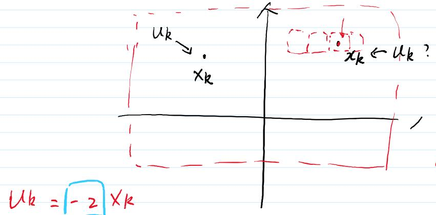
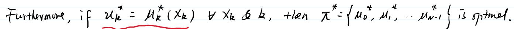

研讨会系列 · KF L19 · 动态规划理论深化 · 第二部分
DP 算法与维度灾难
Bellman 方程的递推求解、最优策略提取、维度灾难的本质与应对思路
📅 2026-07-15
🧩 DP 算法
🏆 Backward Induction
🔄 Curse of Dimensionality
🎯 学完本节，你应能
- 写出 DP 算法的反向递推公式（Bellman 方程）
- 理解 $J_{k}(x_{k})$ 如何从 $J_{N}(x_{N})$ 反向递推到 $J_{0}(x_{0})$
- 掌握从最优值函数提取最优策略的方法
- 认识维度灾难（Curse of Dimensionality）的本质与常用应对策略
🔑 核心思想
DP 算法从终端状态 $N$ 开始反向递推到初始时刻 $0$，在每个状态 $x_{k}$ 上只需求解一个单步优化问题。然而状态空间随维度指数增长——"维度灾难"是 DP 最大的实际障碍，催生了值函数近似、蒙特卡洛方法等现代强化学习技术。
1. 回顾：最优性原理与值函数
上一讲我们学习了 Bellman 最优性原理——最优策略的子策略也是最优的。这个原理告诉我们：全局优化可以分解为一系列嵌套的单步优化。
为了把这个原理变成可计算的算法，定义最优值函数（optimal cost-to-go）如下：
$$
J_{k}(x_{k}) = \text{从状态 } x_{k} \text{ 开始、执行最优策略到终点的最小期望代价}
$$
特别地，在终端时刻 $N$：
根据最优性原理，$J_{k}(x_{k})$ 可以通过 $J_{k+1}(x_{k+1})$ 计算出来。这就是我们将要推导的 DP 算法。
2. DP 算法的形式化表述
对于基本问题的每一个初始状态 $x_{0}$，最优代价 $J^{*}(x_{0})$ 等于 $J_{0}(x_{0})$，由以下从 $N-1$ 到 $0$ 反向递推的 DP 算法给出：
⚙️ DP 算法（Bellman 方程）
终端条件：
$$
J_{N}(x_{N}) = g_{N}(x_{N})
$$
反向递推（$k = N-1, N-2, \dots, 0$）：
$$
J_{k}(x_{k}) = \min_{u_{k}} \mathbb{E}_{w_{k}} \left\{ g_{k}(x_{k}, u_{k}, w_{k}) + J_{k+1}(f_{k}(x_{k}, u_{k}, w_{k})) \right\}
$$
其中 $x_{k+1} = f_{k}(x_{k}, u_{k}, w_{k})$
进一步地，如果对每个 $x_{k}$ 和 $k$ 有：

DP 算法从 $k=N$ 反向递推到 $k=0$ 的示意
2.1 方程的含义拆解
Bellman 方程将多步优化分解为单步优化。让我们逐项拆解：
$g_{k}(x_{k}, u_{k}, w_{k})$
即时代价（immediate cost）
在当前状态 $x_{k}$ 下采取控制 $u_{k}$，遇到扰动 $w_{k}$ 所付出的代价。
$J_{k+1}(f_{k}(x_{k}, u_{k}, w_{k}))$
未来最优代价（optimal future cost）
从下一个状态开始的最优代价——由最优性原理保证其最优性。
$\min_{u_{k}} \mathbb{E}_{w_{k}}$
最小化期望
对随机扰动取期望后，选择使"即时代价 + 未来代价"最小的控制。
3. 递推过程的直观理解
为了更好地理解反向递推过程，我们用一个简单例子来说明。
3.1 从海盗问题看递推
海盗分钻石问题本质上就是 DP 算法的生动体现。让我们将两者对应起来：
| DP 算法 |
海盗分钻石 |
$k = N$（终端）
$J_{N}(x_{N}) = g_{N}(x_{N})$ |
只剩最后 1 个海盗时，他独吞 100 颗钻石 |
$k = N-1$
$J_{N-1} = \min\{ \text{即时代价} + J_{N} \}$ |
4 号海盗知道自己如果死了 5 号独吞，所以给 5 号 0 颗即可 |
$k = N-2$
$J_{N-2} = \min\{ \text{即时代价} + J_{N-1} \}$ |
3 号海盗知道如果自己死了 4 号得 100，所以花 1 颗收买 5 号 |
| $\dots$ |
$\dots$ |
$k = 0$
$J_{0}(x_{0})$ 就是整个问题的最优代价 |
海盗 1 得到 98 颗钻石——整个问题的"最优代价" |
这个对应关系说明：DP 算法本质上就是把上一讲学到的向后归纳思维，变成了一个可以在计算机上执行的数学递推公式。
3.2 向量化表示
在实际计算中，我们通常将每个时刻 $k$ 的 $J_{k}$ 存储为一个向量（或表），每个维度对应一个可能的状态值。当状态是离散的且取值有限时，这个表可以直接查：
💡 DP 的"空间换时间"哲学
DP 的核心理念是：用空间换时间。原本我们需要考虑所有可能的路径组合（指数级），但 DP 通过存储每个状态的最优值函数，将复杂度降为 $O(N \times |S| \times |A|)$，其中 $|S|$ 是状态数，$|A|$ 是动作数。这正是 DP 高效的关键。
4. 最优策略的提取
DP 算法完成后，我们不仅得到了最优代价 $J_{0}(x_{0})$，还得到了在每个状态下应该如何行动——即最优策略。
4.1 提取方法
在反向递推的过程中，对每个 $k$ 和每个 $x_{k}$，记录使 Bellman 方程取到最小值的那一控制：
$$
\mu_{k}^{*}(x_{k}) = \arg\min_{u_{k}} \mathbb{E}_{w_{k}} \left\{ g_{k}(x_{k}, u_{k}, w_{k}) + J_{k+1}(f_{k}(x_{k}, u_{k}, w_{k})) \right\}
$$
4.2 正向执行
在实际运行中，我们不需要再解优化问题——只需查表：
🔄 观测当前状态 $x_{k}$ → 查表得到 $u_{k} = \mu_{k}^{*}(x_{k})$ → 执行 $u_{k}$ → 观测下一状态 $x_{k+1}$ → 重复
4.3 完整的 DP 四步流程
1️⃣ 初始化
设置终端代价函数：
$$
J_{N}(x_{N}) = g_{N}(x_{N}), \quad \forall x_{N}
$$
2️⃣ 反向递推
对 $k = N-1, N-2, \dots, 0$：
$$
J_{k}(x_{k}) = \min_{u_{k}} \mathbb{E}[g_{k} + J_{k+1}]
$$
对每个可能的状态 $x_{k}$ 计算。
3️⃣ 提取策略
记录每个状态下的最优决策：
$$
\mu_{k}^{*}(x_{k}) = \arg\min_{u_{k}} \mathbb{E}[g_{k} + J_{k+1}]
$$
4️⃣ 正向执行
运行时根据当前状态查表：
$$
u_{k} = \mu_{k}^{*}(x_{k})
$$
5. 维度灾难（Curse of Dimensionality）
📌 维度灾难
DP 算法理论上可以解决任何离散状态和离散控制的序贯决策问题，但状态空间的维度会导致计算量和存储量指数增长，这是 DP 在实际应用中的主要限制。
5.1 问题的根源
假设状态 $x_{k}$ 是一个 10 维向量，每一维离散化为 10 个值：
这意味着我们需要存储 100 亿个 $J_{k}(x_{k})$ 值——显然不可行。而且对每个状态，还需要计算 $\min_{u_{k}}$，计算量更加巨大。
5.2 指数增长的规律
更一般地，如果状态是 $d$ 维向量，每维离散化为 $m$ 个值：
计算量和存储量都随维度 $d$ 指数增长：
| 维度 $d$ |
离散化水平 $m = 10$ |
内存需求（假设 8 bytes/状态） |
| 1 | $10$ | 80 bytes |
| 2 | $100$ | 800 bytes |
| 3 | $1{,}000$ | 8 KB |
| 4 | $10{,}000$ | 80 KB |
| 5 | $100{,}000$ | 800 KB |
| 6 | $1{,}000{,}000$ | 8 MB |
| 10 | $10^{10}$ | 80 GB |
当 $d = 10$ 时，即使每个状态只存一个浮点数，也需要 80 GB 的内存——这还只是存储一个时刻的值函数！

5.3 维度灾难 vs 最优性原理
需要注意的是：维度灾难并不否定最优性原理的正确性。即使状态空间大到无法穷举，最优性原理本身始终成立。维度灾难只是说：如果我们试图用查表的方式精确求解 DP，计算代价可能高到不可接受。这就需要引入近似方法。
6. 应对策略概览
面对维度灾难，研究人员提出了多种应对策略。理解这些思路，能帮助你建立起从 DP 到现代强化学习（RL）的桥梁。
📉 值函数近似
用参数化模型（如神经网络、线性基函数）来近似 $J_{k}(x_{k})$，而不是精确存储每个状态的值。这是深度强化学习的核心思路。
代表方法：DQN、DDPG、PPO
🎯 蒙特卡洛方法
通过采样而非穷举来估计期望值。只访问"高概率"的状态路径，忽略极不可能的状态，从而大幅降低计算量。
代表方法：Monte Carlo Tree Search (MCTS)
🔗 问题分解
将高维问题分解为若干低维子问题，利用问题的特殊结构（如稀疏性、可分性、对称性）来降低复杂度。
代表方法：分布式 DP、分层强化学习
⚡ LQR 特例（解析解）
对于线性系统 + 二次代价 + 高斯噪声（LQG），Bellman 方程有解析解——Riccati 方程。这正是 Kalman Filter 与 LQR 对偶的来源。
代表方法：离散 Riccati 方程递推
🔗 与 KF 的联系
Kalman Filter 本质上可以看作是 DP/Bellman 方程在线性高斯系统下的特例。KF 的协方差更新方程（Riccati 方程）与 LQR 的 Riccati 方程互为对偶关系。这正是我们把 DP 放在 KF 系列最后的原因——它们是同一个理论框架的不同侧面。
📝 练习与自测
练习 1：概念理解
为什么 DP 算法是从 $k = N-1$ 反向递推到 $k = 0$，而不是从 $k = 0$ 正向递推到 $k = N-1$？正向递推会有什么问题？
点击查看答案
反向递推是 DP 算法的核心，原因在于：
- 终端条件已知：在 $k = N$ 时，$J_{N}(x_{N}) = g_{N}(x_{N})$ 是已知的——终端代价只取决于最终状态。这是递推的起点。
- 信息传递方向：$J_{k}(x_{k})$ 依赖于 $J_{k+1}(x_{k+1})$——未来最优代价是当前决策的"输入"。我们只能从已知的未来倒推到现在。
- 正向递推的困境：如果从 $k=0$ 正向递推，我们需要知道 $J_{1}(x_{1})$ 才能决定 $u_{0}$，但 $J_{1}$ 此时还未计算出来。这就像"先有鸡还是先有蛋"的问题。
正向递推通常需要知道所有可能的路径，然后比较这些路径的代价——这本质上就是穷举法，复杂度为 $O(|A|^{N})$，而不是 DP 的 $O(N \cdot |S| \cdot |A|)$。
练习 2：数值计算
假设一个简单 DP 问题：终端时刻 $N=3$，状态空间 $\{A, B, C\}$，控制空间 $\{\alpha, \beta\}$。终端代价为：
$$
J_{3}(A) = 10, \quad J_{3}(B) = 20, \quad J_{3}(C) = 30
$$
在 $k=2$ 时刻，状态 $A$ 下：
- 选择 $\alpha$：即时代价 $= 5$，确定性转移到 $B$
- 选择 $\beta$：即时代价 $= 2$，确定性转移到 $C$
请计算 $J_{2}(A)$ 和 $\mu_{2}^{*}(A)$。
点击查看答案
应用 Bellman 方程（本题中无随机扰动，$\mathbb{E}$ 退化为确定性）：
对于 $\alpha$ 选项：
$J_{2}^{\alpha}(A) = g_{2}(A, \alpha) + J_{3}(B) = 5 + 20 = 25$
对于 $\beta$ 选项：
$J_{2}^{\beta}(A) = g_{2}(A, \beta) + J_{3}(C) = 2 + 30 = 32$
取最小值：$J_{2}(A) = \min\{25, 32\} = 25$
最优决策：$\mu_{2}^{*}(A) = \alpha$（因为 $\alpha$ 的代价 25 小于 $\beta$ 的代价 32）
练习 3：维度灾难分析
假设一个无人机路径规划问题，状态空间包含位置 $(x, y, z)$ 和速度 $(v_{x}, v_{y}, v_{z})$，每维离散化为 50 个值。
(a) 状态空间的总维度是多少？总状态数是多少？
(b) 如果每个状态的 $J_{k}$ 值用 8 bytes 的浮点数存储，仅存储一个时刻的值函数需要多少内存？
(c) 如果时间步长 $N = 100$，存储所有时刻的值函数需要多少内存？
点击查看答案
(a) 状态维度 $d = 6$（3 个位置 + 3 个速度）。每个维度离散化为 50 个值，总状态数 = $50^{6} = 15{,}625{,}000{,}000 \approx \mathbf{1.56 \times 10^{10}}$（约 156 亿个状态）。
(b) 每个状态 8 bytes：$1.56 \times 10^{10} \times 8 \approx 125$ GB。仅存储一个时刻就需要 125 GB 内存。
(c) $N = 100$ 个时刻：$125 \times 100 = 12{,}500$ GB ≈ 12.5 TB。这远远超出了普通计算机的存储能力。
这个例子说明：即使是一个看似简单的问题（6 维状态），精确 DP 查表法也是不可行的。这也是为什么现代强化学习需要使用值函数近似等方法。